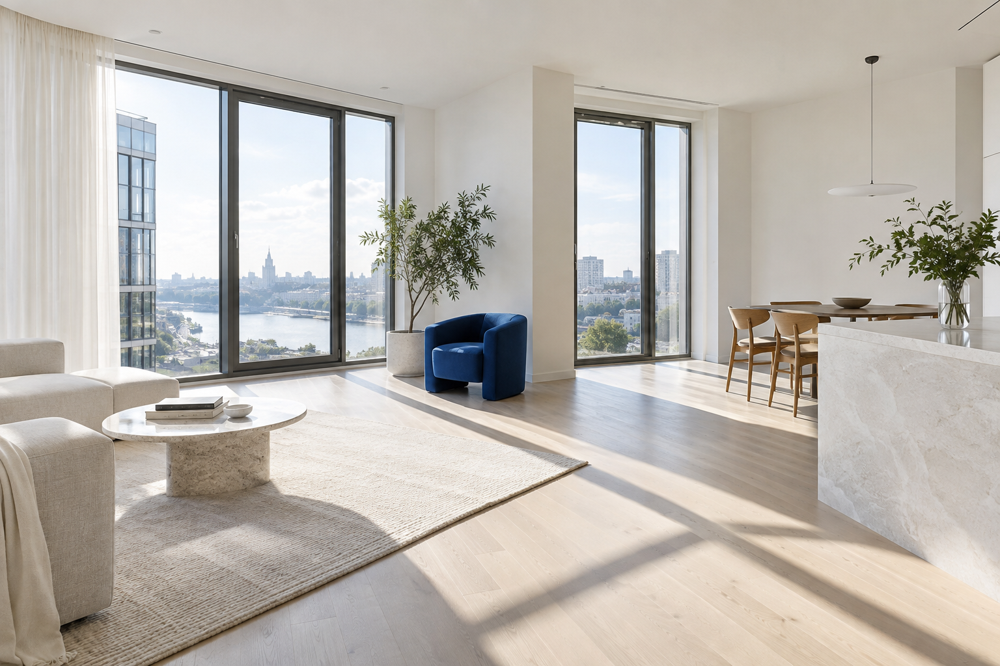

01
Генеральная
Когда хочется свежести
в каждом уголке.
- Полы, плинтусы и двери
- Кухня и сантехника
- Открытые поверхности
Ремонт закончился.
Пусть останется только удовольствие
от вашего дома.
От первого расчёта
до последнего чистого уголка.

Выберите, что нужно вашему дому.
Состав работ — без мелкого шрифта.
Когда хочется свежести
в каждом уголке.
Убираем следы ремонта.
Возвращаем ощущение дома.
Чтобы привезти с собой вещи,
а не заботы об уборке.
* Удаление следов — после проверки материала поверхности. Цены и состав услуг представлены для демонстрации.
Выберите тип уборки, площадь
и дополнительные услуги.
Это предварительный расчёт.
В реальном заказе состав и стоимость
согласуют после уточнения деталей.
Три шага от расчёта
до готового результата.
Выберите уборку и площадь. Отметьте, какие дополнительные работы нужны.
В рабочем сервисе менеджер уточнит состояние квартиры, время и итоговую стоимость.
Проверяйте результат по согласованному списку — от кухни до дальнего уголка.
Удаление строительной пыли с доступных поверхностей, уборка пола, дверей, кухни и санузла. Окна и балкон добавляются в калькуляторе отдельно. Вывоз строительного мусора и высотные работы в этот пример не входят.
Нет. Это демонстрационный предварительный расчёт. В реальной услуге итог зависит от загрязнений, материалов и согласованного перечня работ. Минимальная сумма в этом примере — 4 500 ₽.
В концепции этого сервиса средства и инвентарь входят в услугу. Для деликатных поверхностей способ очистки согласовывается отдельно.
Это проект для портфолио, а не действующая клининговая компания. Калькулятор работает, а заявка показывает пример взаимодействия. Услуги не оказываются, деньги не списываются, данные никуда не отправляются.
«Ясно» — концепт сервиса уборки для портфолио веб-разработчика. Здесь можно проверить адаптивный сайт, расчёт стоимости и оформление тестовой заявки.
Интеграция с Telegram и CRM — следующий этап. В этой версии демонстрация работает в браузере.